Hashikami
Hashikami · Aomori
Hashikami
Highlighted on the Aomori map.
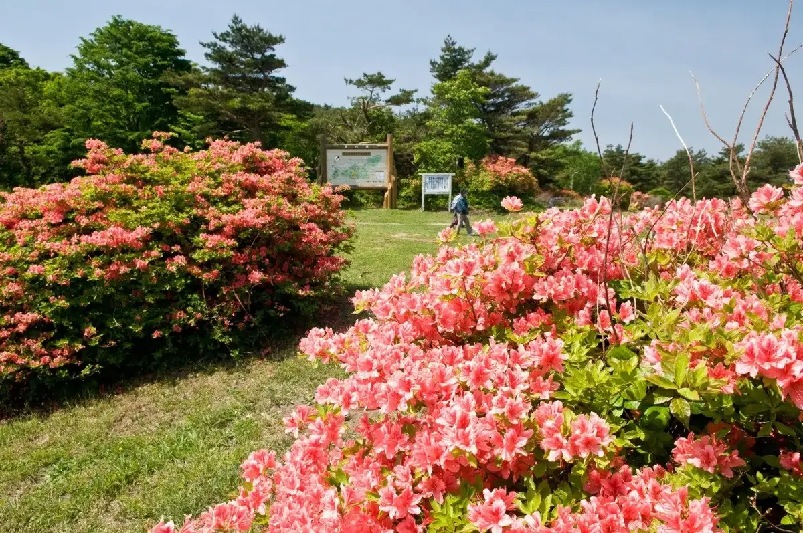
Stay
No bookable places to stay found in Hashikami — nearest options in Hachinohe.
Dining
八戸カントリークラブ
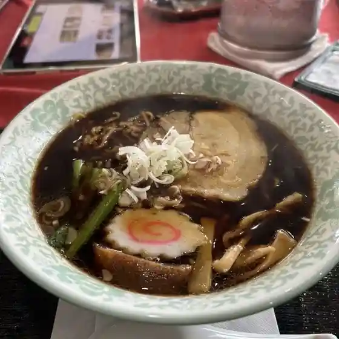
Hachinohe Kantoriikurabu
階上早生そば お休み処
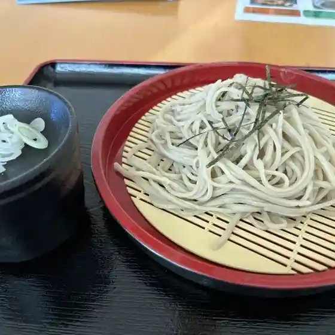
Kaijou Wase Soba O Yasumi Tokoro
わたしの素ペース
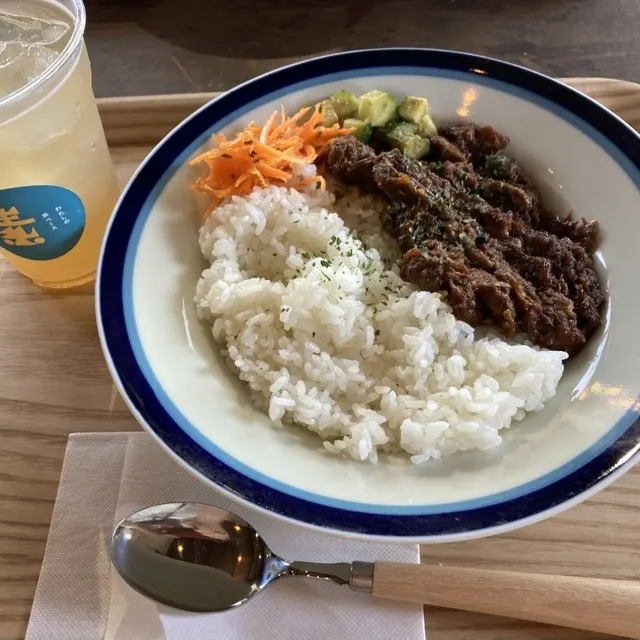
Watashino Moto Peesu
道の駅 はしかみ
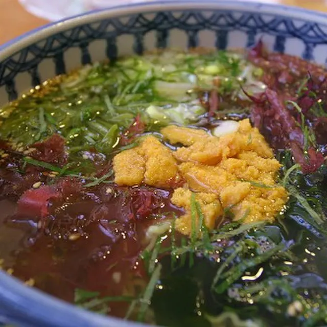
Michi No Eki Hashikami
美松
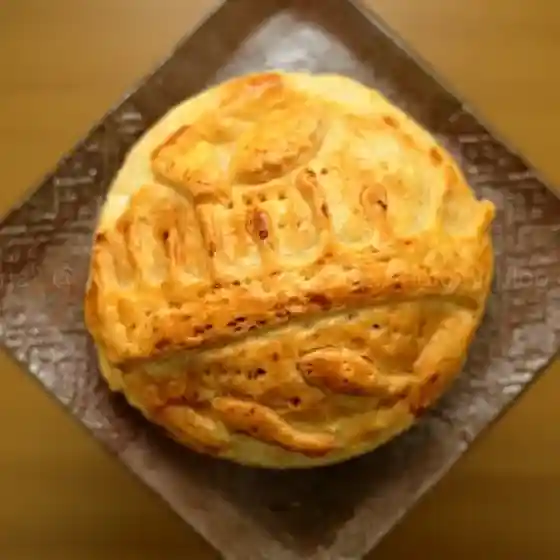
Bishou
リンデン
Rinden
ラグノオ ユニバース階上店
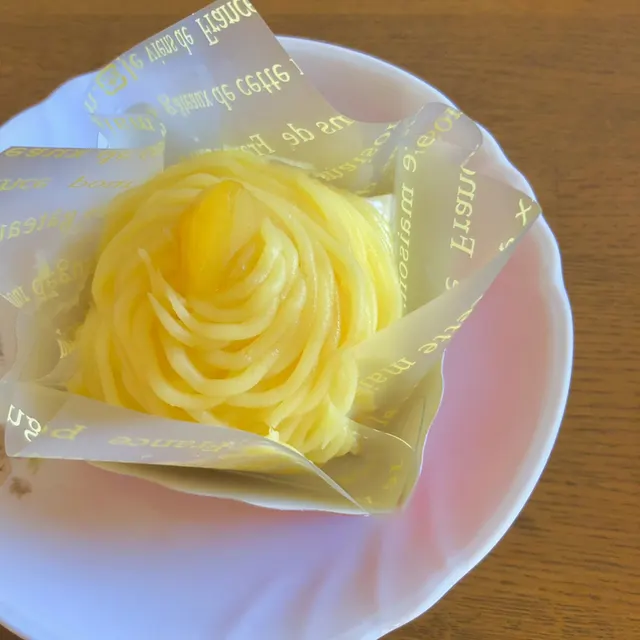
Ragunoo Yunibaasu Kaijou Mise
レストラン アゼリー
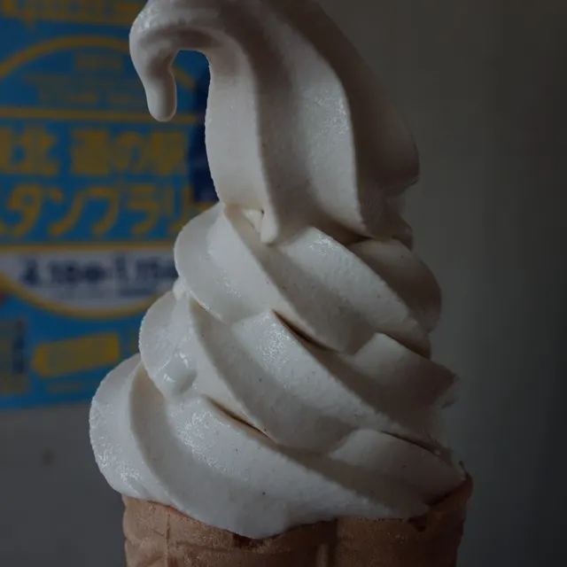
Resutoran Azerii
幸龍
Sachi Ryuu
レストランmar
Resutoran Mar
CHAWEEWAN
Chaweewan
ファミリーマート 階上蒼前店
Famiriimaato Kaijou Ao Mae Mise
おかず家
Okazu Ie
うにとあわびの専門店 マルタマ横道商店
Unitoawabino Senmonten Marutama Yokomichi Shouten
菓舗 まどか
Ka Ho Madoka
ほっかほっか亭 階上
Hokkahokka Tei Kaijou
陽だまり
You Damari
東門
Higashimon
階上町わっせ交流センター
Kaijou Machi Wasse Kouryuu Sentaa
とんかつ 弥次喜多
Tonkatsu Yaji Kita
さかえ屋
Sakae Ya
お休処てらした
O Kyuu Tokoro Terashita
フォレストピア階上
Foresutopia Kaijou
ぱくぱくカレー
Pakupaku Karee
Sights
Mt. Hashikami
739 m mountain in Sanriku Fukko National Park, nicknamed "Gagyuzan" for its reclining-cow shape.
Mt. Hashikami Adult Hiking Course
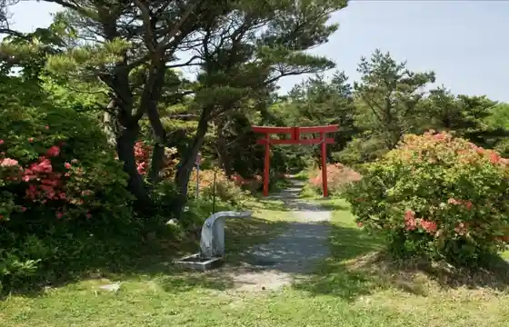
4.79 km one-way trail (about 2 hours) up Mt. Hashikami from Forestopia Hashikami.
Roadside Station Hashikami
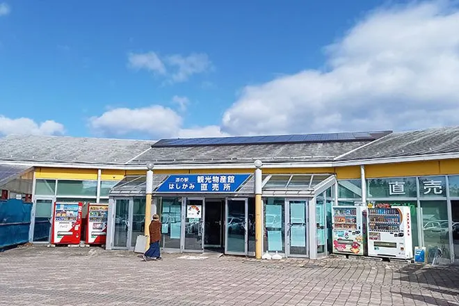
Roadside station on Route 45 with a farm market, restaurant, 24-hour rest area and lawn.
Hashikami Lighthouse
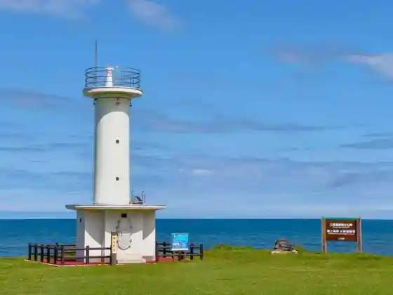
White 11 m lighthouse on a grassy rise above the Kobunato coast.
Kobunato Coast
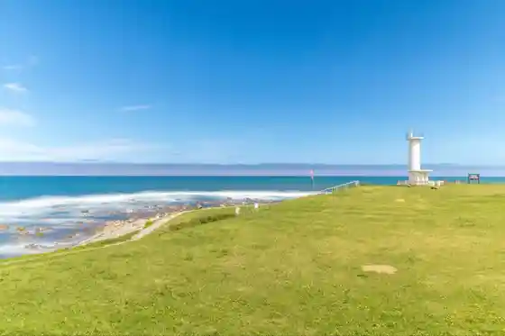
Coast of lawns and rocky reefs at Aomori's southeastern tip, where the prefecture's earliest sunrise is seen.
Hashikami Hama no Eki Arudiba
Seafood market on the Hashikami coast with Restaurant Mar and a snack corner run by local fisherwomen.
Hachinohe Country Club
27-hole championship golf course opened in 1974 that has hosted men's professional tournaments.
Forestopia Hashikami
Visitor facility at the Mt. Hashikami trailhead selling local produce, with a restaurant serving Hashikami soba and gelato.
Terashita Kannon
First temple of the Nukanobu 33 Kannon pilgrimage, said to date from the Kamakura period.
Mt. Hashikami West Trail (Seseragi Park Course)
6.2 km one-way trail (about 2.5 hours) up Mt. Hashikami from Seseragi Park.